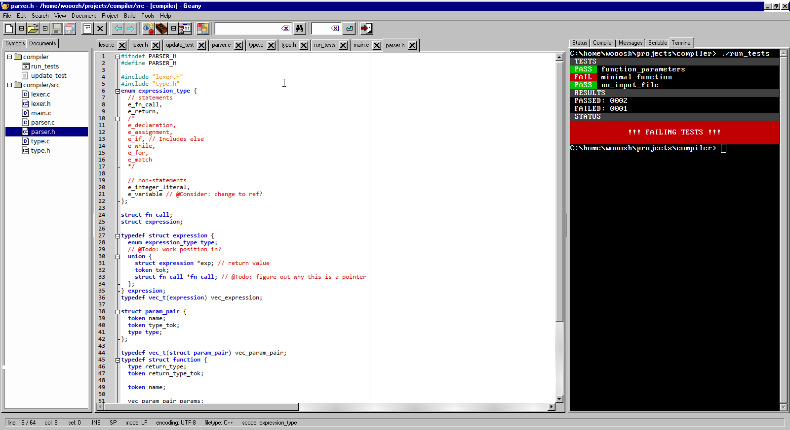
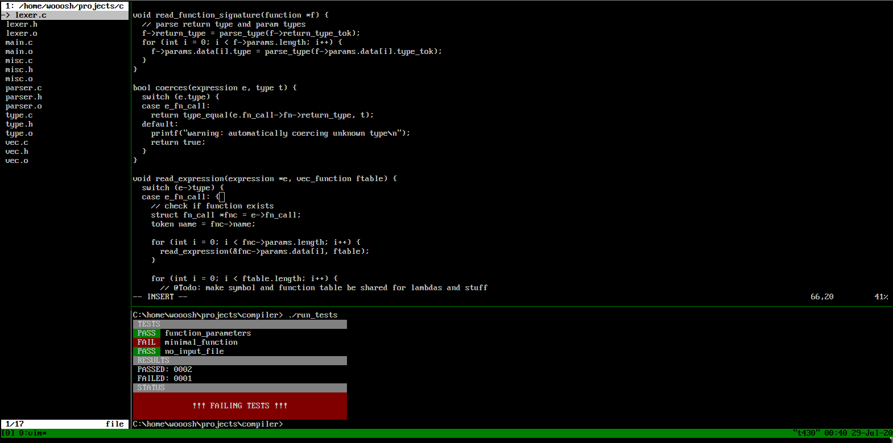

why i'm writing my own editor
After using vim for a few years and trying some non-modal editors recently, I decided to write my own editor. There are a couple of reasons for this:
- Writing an editor seems like a cool project
- No editor currently does movement in the way I want, and adapting current editors would be a pain
- Every editor I've tried is too far on one end of the complexity spectrum
- I want to experiment with combining a simpler editor with other software to create a development environment
- I'm tired of using a weird language for plugins and configuration (vimscript)
editor movement
The editors I've used all use a concept of words for navigation, which is not
conducive to navigating code. For example, each | shows a "word" boundary
according to vim:
|printf|("%|s|\|n|", |my_string|);
The logic for what defines a word seems to be all over the place, and ideally I want something more like this, where there is a word boundary at the end of each token:
|printf|(|"|%s|\n|"|,| |my_string|)|;|
NOTE: %s and \n are both recognized as individual tokens here.
complexity/simplicity/scope
I find vim to be too large in scope to fully grasp, without dedicating more time to learning it than I deem reasonable. Given the number of operations I use on a day-to-day basis I don't think modal editing is neccesary either.
I intend to only have a few keybindings in my editor, mostly based around movement:
| Keybind | Function |
|---|---|
| Ctrl-S | Save |
| Ctrl-Shift-S | Save as |
| PgUp/PgDown | Page up/Down |
| Home/End | Start/end of line |
| Ctrl-Home/End | Select whole line and put cursor at start/end of line |
| Arrows | Move one cell in a direction |
| Ctrl-Left/Right Arrow | Move one token left/right |
| Shift-Movement | Extend or start selection |
| Ctrl-F | Find and replace (including regex) |
| Ctrl-M | Run or record macro |
| Ctrl-[, Ctrl-] | Fold/Unfold block |
One important thing to note here is that on both keyboards I use (laptop and a 60% w/arrow keys), the arrow keys are right below enter and are much closer to the home row than on typical keyboards. It might make sense to consider alternate bindings or a modal editor for keyboards that have the arrow keys positioned somewhere more inconvenient.
software composition
Previously, vim was my entire development environment: file manager, editor, terminal multiplexer, build system binds, etc. Now, instead of having everything inside my editor, I want to have everything loosely coupled together with a standalone terminal multiplexer such as dvtm or tmux.
 
Ideally I have the terminal multiplexer manage keybinds, and link everything together. This way if I decide I'm no longer a fan of my editor, then switching a new editor into my development environment should be easy, while still maintaining the same general workflow.
plugins w/ffi
Instead of having to directly edit the editors source or using something like vimscript, I want to load shared objects as plugins at runtime. This gives me the option of using any number of languages such as rust, go, or c/c++ for writing plugins.
recap
My main goal is to make an editor that hits the perfect balance between complexity and simplicity for myself. Things are likely to change from what I've written here as I progress through development.
Unfortunately I will likely not start work on this for a while (~3 months) due to already having a fairly large project underway.